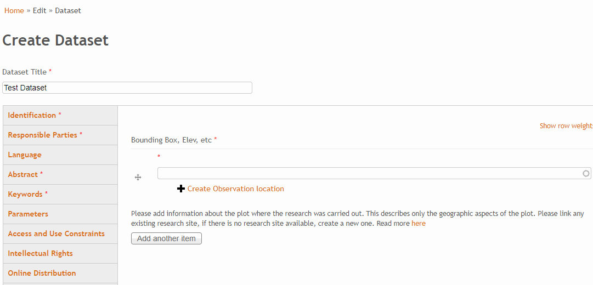

Adding or editing dataset information¶
Adding a dataset¶
Go to “Edit/Site/Add Dataset”
In order to add a site you have to log in. When adding a dataset please bear in mind that you can reuse already defined geographic boundaries.
Adding an observation location¶
It is required to define the geographic information of a dataset. This is done by create or referencing to an “observation location”.

It is mandatory to give a research site:
- Name of observation location
- Description and
- Geographic Location (the actualy boundaries of the area)
Once an observation location is created it can be referenced by multiple datasets. If you have multiple datasets that all share the same geographic extend you can create the observation location once and reference all datasets to thisobservation location. This will save you time and nerves :)
Please don’t create multiple observation locations for the same geographic boundaries.